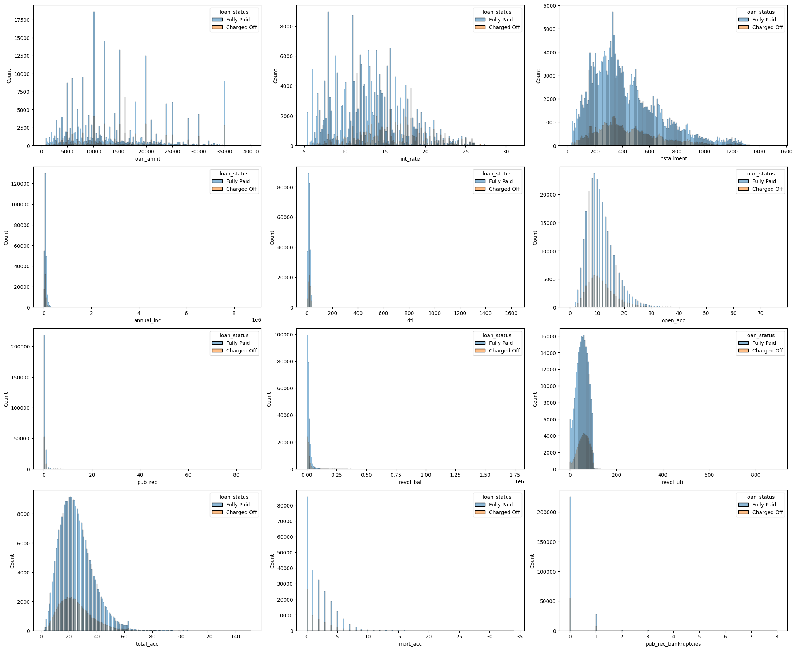

LoanTap
Resources
You can find the code for this project in this repo.
For this project, I followed the below Data-Science Lifecycle. 
1. Problem Statement
Banking/Lending institutions approve or reject loans of applicants based on their credit profile details. The objective of this project is to develop a classical Machine-learning model, to help the institutions approve or reject loans based on the applicant details. The impact would be reduction of manual effort in decision-making, maybe needing only manual intervention at the last stages of loan approval.
Since, the decision is either loan approved or rejected, which is a binary feature thus making this a Binary classification task.
2. Data collection
I used this Kaggle dataset for this project, hence data collection wasn’t needed.
Before, proceeding to the next phase, its considered a good practice to: * Choose an appropriate Success Metric * Split the data into Training & Test set and use the Test-set only in model-evaluation phase.
Upon initial exploration of the dataset, it turns out that the data is imbalanced (Fully Paid:Charged Off :: 4:1). Hence, I chose F1-score & PR-AUC as the success metrics over Accuracy (not optimal), as they focus more on the Positive (minority) class.
I made a stratified split to original data, which preserves the ratio of minority-majority classes in both the training & test sets.
3. EDA
I made use of the following tools to explore the data in the notebook:
- Basic Exploration
- Visualization (Univariate & Bivariate)
- Outlier detection
- Correlation analysis
- Hypothesis testing
Some of the visualizations from the notebook are as below:  

The compiled insights from EDA are as follows:
- The dataset has 27 features: 12 numerical, 13 categorical (including target-feature) & 2 date related in nature.
- The dataset consists for missing values but no duplicates.
- Numercical features:
- Names: loan_amt, int_rate, installment, annual_inc, dti, open_acc, pub_rec, revol_bal, revol_util, total_acc, mort_acc, pub_rec_bankruptcies
- Almost all of them are right skewed with outliers present on the high extremes. Some features such as
dti, revol_bal, revol_utilhave outlier values which might seem impossible in real-world - Borrowers tend to apply for loan amount in round figures i.e. 5K, 10K, 20K, 25K etc. with $10K being the most commonly borrowed amount.
- The proportion of defaulters is higher for higher values of
dti, revol_util, int_rate. - Applicants with any negative record are more likely to default.
- The following combination of features have shown high Spearman correlation:
loan_amnt & installment,pub_rec_bankruptcies & pub_rec,total_acc & open_acc. These correlations makes sense: installment is derived from loan_amnt, pub_rec_bankruptcies & pub_rec represent similar information i.e. negative records while total_acc & open_acc represent the number of credit-lines for each applicant. - The median values for defaulters is slightly higher than non-defaulters in these features:
int_rate, dti, loan_amnt, revol_util, open_acc. This indicates that defaulters tend to: borrow larger loans, have more open credit-lines, have higher interest rate due to high riskiness, have higher debt than income.
- Categorical features:
- Names: term, grade, sub, emp_title, emp_length, home_ownership, verification_status, purpose, title, initial_list_status, application_type, address, loan_status
- Applicants generally opt for 3-year loans than 5-year. Also, 5-year loans have higher default-rate (~50%)
- The default rate increases with grades A->G and sub-grades A1->G5, confirming that A-grade loans are the safest while G-grade the riskiest.
- The default rate is higher among lesser experienced applicants (<1 year) while lesser among more experienced applicants.
- Applicants with rented-homes are more likely to default than the ones with mortgaged or owned homes.
- Debt-consolidation, Moving, Small-business are some of the riskiest categories of purpose feature in terms of default rate
- Date features:
- Names: issue_d, earliest_cr_line
- Applicants are with shorter credit history (2005 onwards) are more likely to default compared to applicants with longer credit history (before 1990)
- Hypothesis Testing:
- Following numerical features are more discriminative towards
loan_status& hence good predictors:- Features with significantly higher values for Charged Off applicants:
loan_amnt, int_rate, installment, dti, open_acc, pub_rec - Features with significantly higher values for Fully Paid applicants:
annual_inc
- Features with significantly higher values for Charged Off applicants:
- The outliers of following features are good indicators of default cases:
loan_amnt, int_rate, annual_inc, dti, open_acc, pub_rec, revol_bal - The following pair of features are highly correlated with each other:
loan_amnt & installment,total_acc & open_acc,pub_rec & pub_rec_bankruptcies. - The target feature i.e.
loan_statusis dependent on all the categorical features
- Following numerical features are more discriminative towards
4. Data Preprocessing
This phase was executed with the objective of retaining as much information as possible from the original data. It consisted of the below steps:
- Data cleaning
- This step involved stripping whitespaces from categorical features, converting date features to date-time format, extracting pincode from
addressfeature & merging rare categories into a single one for categorical features
- This step involved stripping whitespaces from categorical features, converting date features to date-time format, extracting pincode from
- Missing values imputation
- The imputation strategy for numerical features was median (due to outlier presence) while for most_frequent for categorical features.
- I did consider using KNNImputer, but since the dataset size is huge (~400k rows), it was time-consuming. Hence, I proceeded with the before-mentioned strategies.
- Outlier capping
- I used Winsorization (percentile-capping) to cap the outliers. Since, all the numerical features were right-skewed, I capped their upper-end with 98th percentile value.
- I also considered IQR method for outlier-capping, but for some features such as
pub_rec_bankruptciesthe upper-bound turned out to be 0 (most records were 0). Hence, moved ahead with the before-mentioned strategy.
- Feature engineering
- I created the following new features:
- emi_ratio = installment / monthly_income
- credit_age_years = issue_d - earliest_cr_line
- closed_acc = total_acc - open_acc
- negative_rec = pub_rec | pub_rec_bankruptcies
- credit_util_ratio = revol_bal / annual_inc
- mortgage_ratio = mort_acc / total_acc
- I created the following new features:
- Categorical feature encoding Features for One-hot & Supervised encoding depended on the experiments.
- Ordinal encoding for features:
grade, sub_grade, emp_length, term - One-hot encoding
- Supervised encoding: I ran experiments with 2 types i.e. Weight-of-evidence(WOE) & Target encoding. WOE encoding usually works well with Logistic-regression, but as per my experiment Target encoding performed better.
- Ordinal encoding for features:
- Feature Scaling
- I used RobustScaler to bring the features in the same scale. This choice was made considering the presence of outliers which affects StandardScaler & MinMaxScaler. RobustScaler considers median & IQR for scaling, which are much resilient statistics towards outliers as opposed to mean & standard-deviation (used in StandardScaler)
- Dropping irrelevant features
- I dropped the following features:
- title & emp_title: Due to their high-cardinality, their cleaning, information-extraction and encoding was difficult
- issue_d & earliest_cr_line: They were combined into a new feature i.e. credit_age_years and dropped later
- I dropped the following features:
I created a scikit-learn Pipeline with the above mentioned steps using Custom-Transformers, to make experimentation easier & quicker. Find the code for the preprocessor here
5. Data Modeling
I trained the following ML models: Logistic Regression, Random-Forest, Xgboost & LightGBM. These models were trained using Cross-validation (StratifiedKFold), to make the results reliable and agnostic to the validation-split.
The experiments were tracked using MLFlow. Each experiment logged details such as parameter and metric values for training & validation sets. These experiments can be accessed here
These experiments were conducted for each model/algorithm across different aspects:
- Handling missing values: I tried with dropping missing values, imputing and leaving them in (specifically for tree-based models)
- Encoding strategies: I tried with only Onehot encoding, Onehot + Target encoding and only Target encoding of categorical features
- Outlier handling: I tried with capping outliers and leaving them in. Handling outliers
- Class imbalance handling: I tried with oversampling using SMOTE and class_weights parameter of models. Using class_weights parameter provided better results.
- Specific experiments:
- Logistic regression assumes there is no multi-collinearity between the independent features, which I verified by calculating VIF (Variance Inflation Factor) values for each feature. I compared keeping vs. dropping features with high VIF values and the results of leaving all the features in was better, indicating that dropping those features (with VIF > 5) lead to information loss affecting the predictive ability of the model.
These were the results of different models:
| Model | Precision | Recall | F1-score | PR-AUC (Average Precision) |
|---|---|---|---|---|
| Logistic regression | 0.522 ± 0.003 | 0.791 ± 0.004 | 0.629 ± 0.003 | 0.783 ± 0.002 |
| Random forest | 0.489 ± 0.002 | 0.822 ± 0.004 | 0.613 ± 0.001 | 0.781 ± 0.003 |
| Xgboost | 0.506 ± 0.002 | 0.814 ± 0.003 | 0.624 ± 0.002 | 0.787 ± 0.002 |
| LightGBM | 0.503 ± 0.001 | 0.815 ± 0.003 | 0.622 ± 0.002 | 0.786 ± 0.003 |
Considering Occam’s razor, Logistic regression is one of the best models including Xgboost if we had to select top-2. Next, I performed hyperparameter-tuning & optimization for these models.
I used scikit-learn’s GridSearchCV for Logistic-regression & RandomizedSearchCV for Xgboost to find the optimal set of hyper-parameters. As part of optimization, I searched for the optimal threshold value that outputs the best metrics for Logistic-regression, Xgboost & Ensemble model (equal combination of the individual models). After threshold optimization, Ensemble model fared better than the individual models with F1-score = 67% and PR-AUC = 79%.
6. Model Evaluation
Now, it was time to evaluate the models on test-set held out at the beginning of the project. The results were as below:
| Model | Precision | Recall | F1-score | PR-AUC (Average Precision) |
|---|---|---|---|---|
| Logistic regression | 0.707 | 0.613 | 0.657 | 0.778 |
| Xgboost | 0.688 | 0.634 | 0.66 | 0.78 |
| Ensemble (Logreg + Xgboost) | 0.664 | 0.663 | 0.663 | 0.784 |
Based on the above results and our success metrics i.e. F1-score & PR-AUC, I chose Ensemble model for inferencing. There is one downside though with this model that its a combination of 2 models, hence requires separate data-prerpocessing & inferencing for both which might lead to comparatively higher latency than the individual models.
7. Model deployment
For deployment, I made use of Docker-compose to run 2 docker containers: Frontend (Streamlit) & Backend (FastAPI), communicating over docker-network (bridge). The compose.yaml & dockerfiles for both Frontend & Backend can be found in the repo. This can be later be easily deployed to AWS ECS Fargate.
The reasons for the before-mentioned deployment choices were:
- Streamlit: It is a Python-framework extensively used to create interactive web-applications with ease
- FastAPI: It is a excellent choice as a backend-server due to its capability to handle large number of asynchronous requests. It also automatically provides docs for the all the endpoints for faster debugging.